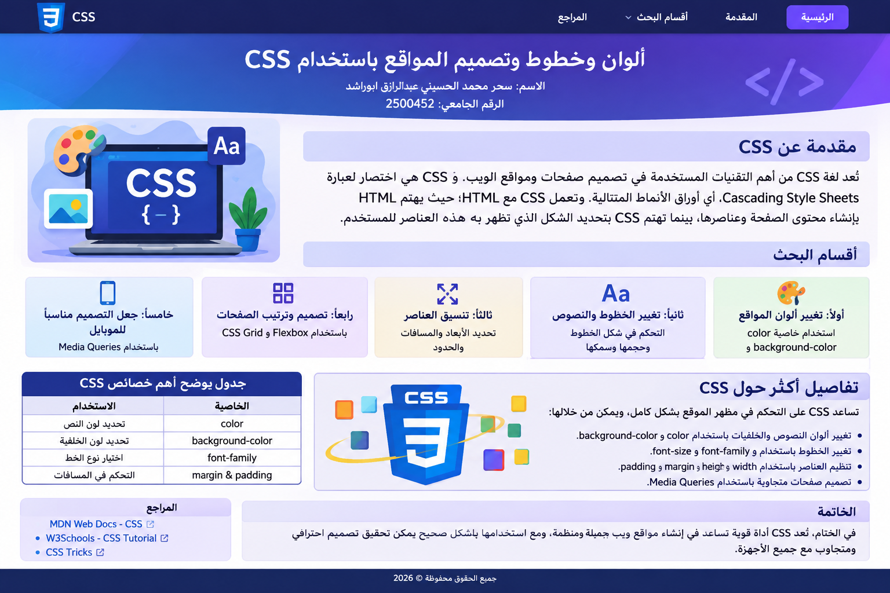

أولاً: تغيير ألوان المواقع
تُستخدم الخاصية color لتحديد لون النص، بينما تُستخدم background-color لتحديد لون خلفية العنصر. ويمكن تحديد الألوان بأسمائها أو بالأكواد السداسية أو باستخدام قيم RGB.
اسم الطالبة: سحر محمد الحسيني عبدالرازق ابوراشد
الرقم الجامعي: 2500452
تُعد لغة CSS من أهم التقنيات المستخدمة في تصميم صفحات ومواقع الويب. وCSS هي اختصار لعبارة Cascading Style Sheets، أي أوراق الأنماط المتتالية. تعمل CSS مع HTML؛ حيث يهتم HTML بإنشاء محتوى الصفحة وعناصرها، بينما تهتم CSS بتحديد الشكل الذي تظهر به هذه العناصر للمستخدم.
تسمح CSS للمصمم بالتحكم في الألوان والخطوط وأحجام العناصر والمسافات والحدود وترتيب مكونات الصفحة، مما يساعد على إنشاء مواقع واضحة وجذابة وسهلة الاستخدام.

تُستخدم الخاصية color لتحديد لون النص، بينما تُستخدم background-color لتحديد لون خلفية العنصر. ويمكن تحديد الألوان بأسمائها أو بالأكواد السداسية أو باستخدام قيم RGB.
تحدد font-family نوع الخط، وfont-size حجمه، وfont-weight سمكه. كما تتحكم خصائص مثل text-align وline-height في المحاذاة والمسافة بين السطور.
تحدد width وheight العرض والارتفاع، وتتحكم margin في المسافات خارج العنصر، بينما تتحكم padding في المسافات داخله، ويمكن إضافة الحدود باستخدام border.
تساعد Flexbox على ترتيب العناصر في صف أو عمود والتحكم في المسافات بينها، بينما تساعد CSS Grid على إنشاء تخطيطات تعتمد على الصفوف والأعمدة.
تسمح Media Queries بتغيير خصائص التصميم حسب حجم الشاشة، وبذلك يظهر الموقع بصورة مناسبة على الكمبيوتر والهاتف والتابلت. ويُعرف ذلك باسم Responsive Design.
| الخاصية | الاستخدام |
|---|---|
| color | تحديد لون النص |
| background-color | تحديد لون الخلفية |
| font-family | اختيار نوع الخط |
| font-size | تحديد حجم الخط |
| margin | التحكم في المسافات خارج العنصر |
| padding | التحكم في المسافات داخل العنصر |
| display: flex | ترتيب العناصر باستخدام Flexbox |
في النهاية، تُعتبر CSS جزءاً أساسياً من تصميم مواقع الويب؛ لأنها تمنح صفحات HTML الشكل والتنسيق المناسب. فمن خلالها يمكن تغيير ألوان النصوص والخلفيات، واختيار أنواع وأحجام الخطوط، والتحكم في المسافات والحدود وأحجام العناصر، بالإضافة إلى ترتيب مكونات الصفحة بطريقة منظمة.
كما تساعد CSS في إنشاء تصميمات متجاوبة تعمل بصورة جيدة على الأجهزة المختلفة. لذلك فإن تعلم خصائص CSS يمثل خطوة مهمة لكل من يريد تعلم تصميم المواقع.